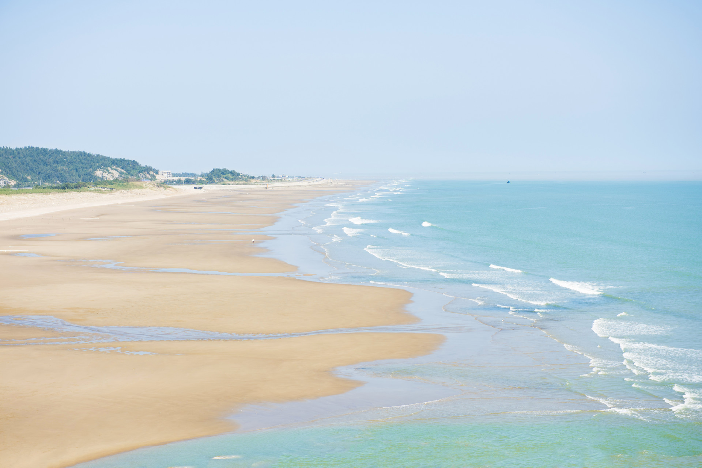

阿尔卑斯山绝美的欧洲之最
跟团游 境内游
奇特旺国家公园，是尼泊尔的国家公园，全称皇家奇特旺国家公园。位于加德满都西南150千米处。公园占地540多平方千米，以产印度独角犀牛闻名。
- 价格 :12330¥起
- 线路编号：01730825
- 旅游类型：跟团游 境外游
- 签证：自主办理
- 行程天数：13天
- 客户服务：专业客服在线
- 交通方式：飞机接送 全程专车接送
- 支付方式：现金、支票、刷卡、支付宝、汇款
费用包含：
1. 申根旅游签证(ADS)随团进出，不允许擅自离团；
2. 国际往返机票，含税；
3. 全程常规四星级酒店配套（产生单间全程加价4000元/人），酒店含自助早餐；
4. 午晚餐为团队标准中式餐(餐标：六菜一汤，饭前茶水，饭后水果) 或当地西餐，特别安排两顿特色餐：鳟鱼餐、猪排 双拼餐；
5. 门票：无忧宫、美泉宫（含22房门票）、渔人城堡、瓦维尔教堂、布拉格城堡区；
6. 中文导游，旅游巴士，外籍司机；
7. 关于境外旅游人身意外保险，所有75周岁以下客人报名，均赠送保险一份，75周岁以上客人建议自行购买符合自身身 体状况及领馆要求的保险，并在送签前提供保险原件，也可由我公司代办，具体请联系我公司销售！凡70周岁以上 （含70周岁）参团者，需同时提供由三甲医院开具的近期体检单；
8. 全程赠送高速WIFI，每4人一台，即刻分享旅行的乐趣（个别国家或地区无法覆盖，敬请谅解）；
9. 包含导游、领队、司机服务费。
更多路线

-
皇家奇特旺国家公园
自由行 欧洲行 境外游

-
乞力马扎罗山非洲最高的山脉
跟团游 境外游 欧洲行
- 
-
尼罗河世界上最长的河流
境内游 跟团游

-
瑞士国家公园欧洲最早的国家公园
境内游 自由行

-
布拉格披着金色外衣的千塔之城
跟团游 境外游

-
阿尔卑斯山绝美的欧洲之最
跟团游 境内游

-
波尔多生在味蕾上的城市
跟团游 境外游 欧洲行

-
普罗旺斯浪漫薰衣草园的紫色梦境
欧洲行 境外游 自由行